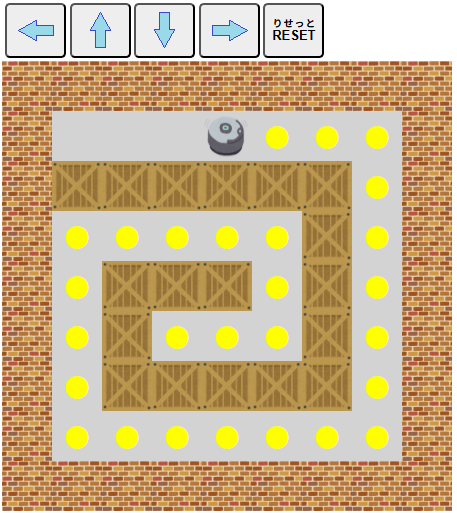

【
倉庫掃除
そうこそうじ
】
掃除機
そうじき
を
操
あやつ
って、
倉庫
そうこ
にあるゴミを
片付
かたづ
けましょう！

矢印
やじるし
キーを
使
つか
って、
掃除機
そうじき
を
操作
そうさ
します。
・
掃除機
そうじき
は
壁
かべ
や
荷物
にもつ
を
通
とお
り
抜
ぬ
けることはできません。
・ゴミの
無
な
いところへは
行
い
けません。
一筆書
ひとふでが
きのように
掃除
そうじ
しましょう！
・すべてのゴミ（
黄色
きいろ
の●
印
しるし
）を
吸
すい
込
こめ
ばクリアとなります。
・[
RESET
りせっと
]ボタンをクリック（タップ）すると
最初
さいしょ
からやり
直
なお
す
事
こと
ができます。
閉
と
じる